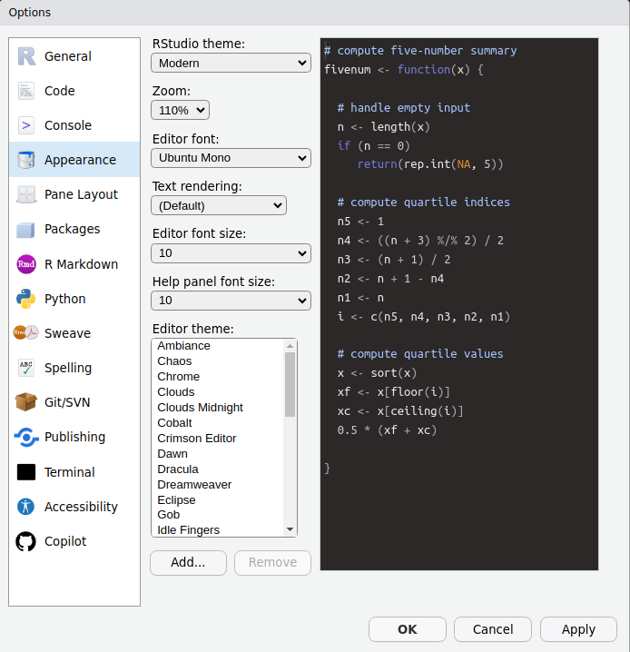

R and RStudio
Resources
- This activity draws on Chapter 1 in Statistical Inference via Data Science: A ModernDive into R and the Tidyverse
What are R and RStudio?
- In the quantitative methods tutorial, we will use R and RStudio to illustrate basic statistical concepts
- R is a programming language and free computing environment for statistical computing and graphics
- RStudio is an integrated development environment (IDE) that provides an interface by adding many convenient features and tools
- Think of R as a car’s engine and RStudio as the dashboard
R is a programming language and free computing environment for statistical computing and graphics. It can be runs on a wide variety of operating systems, including Linux, Windows, and MacOS. RStudio is an integrated development environment (IDE) that provides an interface by adding many convenient features and tools.
You can think of R as a car’s engine and RStudio as the dashboard. In the same way that having access to a speedometer and a navigation system makes driving much easier, using RStudio’s interface makes using R much easier as well.
R and RStudio are entirely free and updated on a regular basis, making them much more accessible and widely used than paid alternatives. You can conduct nearly any analysis using R, ranging from calculating the average of a variable to creating maps and conducting spatial analysis to conducting the analysis for an impact evaluation.
Installing R
- Download and install R by going to https://cloud.r-project.org/
- Windows: Click on “Download R for Windows”, then click on “base”, then click on the Download link
- macOS user: Click on “Download R for macOS”, then under “Latest release:” click on R-X.X.X.pkg, where R-X.X.X is the version number
- Linux user: Click on “Download R for Linux” and choose your distribution for more information on installing R for your setup
If you don’t have R and RStudio already installed, that will be the first step. You will first need to download and install both R and RStudio (Desktop version) on your computer. It is important that you install R first and then install RStudio.
Installing RStudio
- Download and install RStudio at https://www.rstudio.com/products/rstudio/download/
- Scroll down to “Installers for Supported Platforms” near the bottom of the page
- Click on the download link corresponding to your computer’s operating system
Once you have installed R, you can now install RStudio.
Using R via RStudio
- Using R by opening RStudio

Using R via RStudio
- After you open RStudio, you should see something like this

Note the three panes which are three panels dividing the screen: the console pane, the files pane, and the environment pane. Over the course of this tutorial, you’ll come to learn what purpose each of these panes serves.
Peronalization
- Customize the appearance of your R IDE by going to Tools -> Global Options -> Appearance

Layout
- Rstudio contains 4 panes: source, console, environment, and viewer
- The left pane is the source where you write code
- Try typing
2 + 2into the source panel and hitting ENTER- The console panel pop-up in the bottom-left and return a value of
4
- The console panel pop-up in the bottom-left and return a value of
[INSERT SCREEN RECORDING]
Layout
- The top-right includes the Environment panel
- This contains information about any objects that you load into your environment
- Type
sum = 2 + 2into the source and hit ENTER - The object
sumshould appear in your environment
- The bottom-right includes the Viewer panel, where you will be able to see graphics that you generate
Basic programming concepts
- Running code: telling R to perform an act by giving it commands in the source or console
- Objects: where values are saved in R. On the last slide, you created the object
sum. - Data types:
- Integers are whole numbers like
-1, 0, 2, 4092 - Doubles are integers with decimal values like
-24.932and0.8 - Logicals are either
TRUEorFALSE - Characters are text or strings like
"hello world"and"welcome to R"
- Integers are whole numbers like
Basic programming concepts
- Vectors are a series of values. These are created using the
c()function. For example,c(6, 11, 13, 31)creates a four element vector of integers. - Factors are a group of characters/strings with a fixed number of unique values
- Data frames are objects where the rows correspond to observations and the columns correspond to variables that describe the observations
Basic programming concepts
- Conditionals:
- Testing for equality in R is done using
==. For example,2 + 1 == 3will returnTRUE - Boolean algebra: Operators such as
<(less than),<=(less than or equal), and!=(not equal to). For example,3 + 5 <= 1will returnFALSE - Logical operators:
&represent “and” while|represents “or.” For example,(2 + 1 == 3) & (2 + 1 == 4)returnsFALSEsince both clauses are notTRUE
- Testing for equality in R is done using
Loading Packages
- R gives you accesss to thousands of “packages” that are created by users
- Packages contain datasets and bundles of code called “functions” that can execute specific tasks
- Use
install.packages()to install a package- Insert the name of the package contained in quotation marks
- Start by installing the
dplyrpackage
Loading Data
- Load data into your environment by “reading-in” a spreadsheet
- Spreadsheets should be saved as a
.csvfile - Use
read.csv()to pull data from a spreadsheet on your harddrive into your R/RStudio environment- Within the parentheses, add the full file pathway where the
.csvfile is stored
- Within the parentheses, add the full file pathway where the
[INSERT SCREEN RECORDING]
Errors, warnings, and messages
- When you run code, R often provides feedback in the console
- There are 3 main types of feedback that appear in RED
- Errors: When the RED text is prefaced with “Error in…”, your code will not work. The error message will try to explain the problem.
- Warnings: When the red text is prefaced with “Warning:”, your code will still work, but there still might be a problem. The warning message will try to explain the problem.
- Messages: When the red text doesn’t start with “Error” or “Warning”, it’s just a friendly message